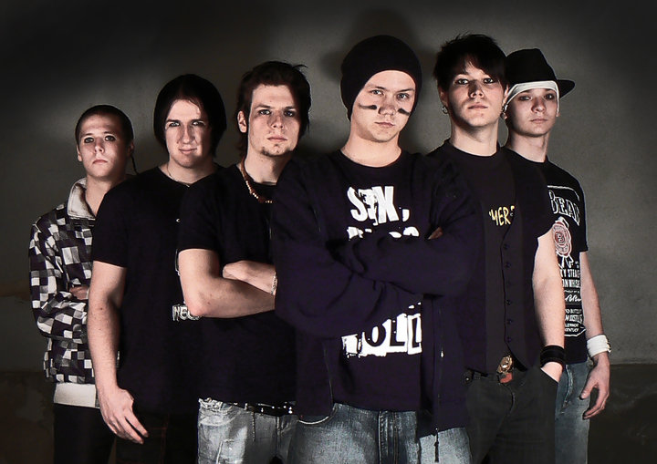
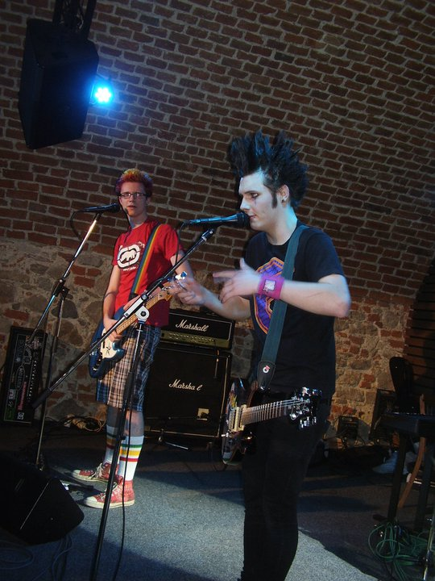

V průběhu několika posledních dnů mi finišovalo zkouškové, a proto na blogování ani jiné zábavné aktivity nebylo moc času ani síly. Jen co jsem se ale vypotácela z kanceláře doktora V. se známkou z poslední zkoušky, bylo mi jasné, že to budu muset ve dnech budoucích napravit a pořádně ty zkouškové stresy spláchnout - ve čtvrtek čajem a pátečního večera i něčím ostřejším ;). Na pátek jsme si totiž s holkama naplánovaly návštěvu koncertu kapely Segment v Holešově. Bohužel jsem nějak nestihla sepsat obsáhlejší report o finále soutěže Skutečná liga, které jsme s Terkou navštívily během mé předvánoční návštěvy v Praze, ale z Terezčina BlogHýsku už jistě všichni dobře víte, že kapela Segment tuto soutěž vyhrála :-)! Další z finalistů - šumperskou kapelu Koblížci - si Segmenti pozvali jako hosty na svůj holešovský koncert, a tak jsme během večera mohli slyšet prakticky to nej z pražského finále- alespoň dle mého vkusu :-). O hudbu tento večer ale přecejen až tak moc nešlo…mnohem lepší bylo to, že jsme mohly vrátit ty báječné časy, kdy nám s holkama bylo -náct a společně jsme obrážely koncerty i mohem pochybnější akce :D. Proto jsem se na páteční večer těšila jako na správnou dámskou jízdu a příjemnou retro akci. Jak se však záhy ukázalo, čistě “dámská” jízda se nekonala :D, neboť naši trojici doplnil Terčin bratránek Kuba. O jeho přítomnosti jsme dopředu věděly, co nám však Terka zatajila byl fakt, že Kuba je Slovák - což bylo věru příjemné zjištění, neboť večer tím získal lehce mezinárodní charakter :D a jelikož máme s Pavčou z mně neznámých důvodů odjakživa pro Slováky slabost (Lolo z Maxihry, slovenský Beatles-revival The Backwards :D…), přijaly jsme mezi sebe Terčinu fešnou rodinku s nadšením :D.

Segment - hvězdy večera
Koncert se měl konat v prostorách hudebního klubu umístěného přímo ve sklepení holešovského zámku. Z pozvánky na Facebooku jsme nabyly dojmu, že v New Drive Clubu budeme za nejstarší fosílie, takže jsem hned u vchodu nasadila výraz “je mi šestnáct”, což skutečně zabralo, a spolu s Pavčou jsem musela sekuriťákům předložit občanský průkaz. Když přejeli očima naše data narození, ochotně nám nasadili zelené náramky, takže už jsme měly jisté, že nám na báru nalejí pivo :D…jinak se to ale popravdě v klubu hemžilo spíše náramky růžovými, které byly určené “emo-dětem”, jak jsem pro sebe vduchu překřtila holešovskou omladinu.
Prostory klubu se mi každopádně moc líbily a jako největší plus hodnotím fakt, že se jednalo o klub nekuřácký, což člověk ráno poté skutečně ocení. Přestože jsme vyráželi s menším zpožděním, Koblížci na sebe dávali čekat. Sotva začali hrát, děcka se nadšeně začala hrnout pod pódium, ale my “starci” jsme zůstali sedět s pivkama u stolu a věnovali se hodnocení klubového interiéru i jeho osazenstva 8-). Přítomnost tolika “dětí” mě popravdě docela překvapila a řadu z nich bych šmahem poslala domů koukat na Večerníček. Snad jediným pozitivem z toho plynoucím bylo to, že jsem alespoň zjistila, co teď mezi mládeží nejvíc frčí :D - snad polovina děcek na sobě měla kostkované košile :D. Další věcí, kterou jsem byla fascinovaná, byly účesy několika emařů - u jednoho kluka jsem měla fakt tendenci zastavit ho a zeptat se, co to sakra používá za gel na vlasy, protože bych chtěla, aby mi vlasy taky tak skvěle držely :D. Ke konci večera Kuba ono tajemství stojatých vlasů rozkryl svou vtipnou a nemravnou glosou, kterou zde radši nebudu reprodukovat :D, a pak už mě přešla chuť jít se zeptat :D.

Koblížci…ty vlasy nepobírám :D
Koncert Koblížků jsme tedy víceméně v poklidu proseděli u prvního pivka a ke konci jejich vystoupení se vmísili do davu emo-dětí, které už byly pěkně rozjeté. Delší pauzu, v průběhu které se k výstupu chystali Segmenti, jsme pak využili k zakoupení dalšího alkoholu, bez kterého se aklimatizování v klubu zdálo naprosto nemožným :D. Zde je to pravé místo vyseknout Terce poklonu za to, že se obětovala a jakožto řidič s námi přežila celý koncert na Birrelu :-)! Alkoholová hladinka přišla vhod hlavně ve chvíli, kdy se před náma začaly dvě emo-děti docela odvážně muchlovat až samou vášní spadly na zem :D…o tom, že měl celý New Drive Club přehled o tom, jaké dotyčná slečna nosí spodní prádlo, ani nemluvím 8-)…Nevěděla jsem, jestli se smát nebo pohoršovat - zkrátka Sodoma Gomora :D! Pavča v průběhu večera narazila na nějakého kamaráda z MORu, který do ní nalil trochu rumu, takže se prodrala s pařící hladinkou až do předních řad, aby si Segmenty užila z první ruky. My ostatní jsme zůstali spíš vzadu, a protože jsem v záchvatu nerozvážnosti předtím slíbila Kubovi, že si s ním dám nějakou baňku, a moje oblíbená " So what" už dohrála, usoudila jsem, že je nejvyšší čas splnit svůj slib. Rozhodla jsem se dát druhou šanci Fernetovi, který mě loni na jaře po mnoha letech věrnosti osudově zradil, a od té doby jsem mu nemohla přijít na jméno. Moc jsem se s ním tentokrát nepárala a rychle ho exla, takže od této chvíle už ode mě nečekejte žádné hodnocení hudební stránky večera :D. Ne že by mě snad ten panák tak položil, ale zkrátka jsme se s Kubou odebrali k šatně, což bylo asi jediné místo klubu, kde se dalo v poklidu hovořit, aniž by byl člověk nucen vyřvat si hlasivky, a zbytek koncertu tam bezostyšně proplkali, povětšinou o našem brněnském studentském životě. Každopádně co tak ke mně dolehlo z hlavního sálu, hráli Segmenti vpodstatě to samé, co jsem slyšela na pražském finále v Hard Rock Café, tak snad jsem o nic nepřišla - hoši, odpusťte :-). Občas se u nás mihla Pavča a nakonec za náma přila i Terka, ale to už bylo po koncertě a mohli jsme se vrátit zpět do sálu k našemu stolu. Po koncertě se klub dost vylidnil a i nás zůstavší obsluha záhy začala vyhazovat. Sotva jsme si tedy objednali poslední pití a dali chvilku řeč s Jerrym, který si za náma po koncertě přišel sednout a Pavča mu mezitím masírovala namožené svalstvo :D, už jsme se museli pakovat.
Cesta domů byla jistě velice veselá, ale už si z ní moc nepamatuju, protože jsem ji tak nějak unaveně proklimbala na zadním sedadle :-). Navíc mi během večera už začaly odcházet hlasivky, tak jsem je nechtěla víc namáhat. I tak jsem se ráno probudila se svým starým známým sexy chraplákem :D…No a jinak samozřejmě akci hodnotím jedenácti hvězdičkama z deseti. Protože mi na ní došlo, jak strašně moc se mi po našich společných holčičích akcích stýská :-)!
P.S. Fotky jsem sprostě ukradla emo-dětem z fejsbuku a ze stránek Segmentu :-)…
O tom, že časy, kdy nám bylo -náct, asi fakt nevrátíme, jsem se přesvědčila ihned po vstupu do klubu :-D
Paradoxně bez alkoholu šla hůř přežít první polovina večera - když hráli Segmenti, tak už to bylo OK. Ale stejně příště jedeme taxíkem :-D :-D :-D
Dokonce jsem věnovala vystoupení Segmentu tolik pozornosti, že jsem vůbec nezaregistrovala, co dělal ten emopáreček, než spadnul na zem :-D
PS: Každej se za něco stydíme - já například už skoro týden za to, jak mě Koča musel táhnout přes půl Prahy; o tom, co jsem u toho tropila, radši nemluvě… Chudák.